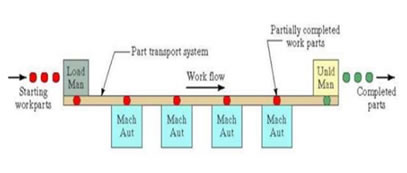
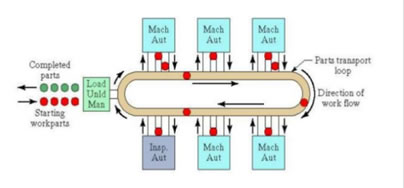
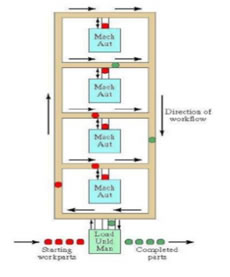
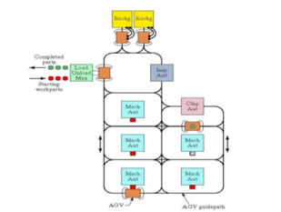
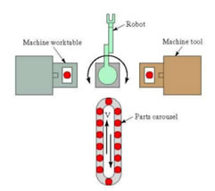
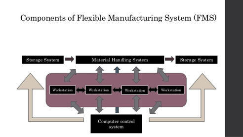

The sequence of workstations and the way these workstations are connected to one another are also of vital importance in an FMS. The layout of the FMS could define the variation and quantity of the products produced. Five basic layouts exist on which several variations have been implemented:
• Line Layout
• Loop Layout
• Ladder Layout
• Open Field Layout
• Robot Centered Layout
The Line Layout (Figure 3) is the most basic of all the FMS layouts. It comprises simply of workstations connected together in a completely linear fashion, starting at the loading workstation and ending at the unloading workstation. Figure 3 - FMS Line Layout
The Line Layout offers the least in terms of variety due to its linearity. It is the easiest and least cost-worthy to implement, however parts can only flow in one direction and therefore there is no back-flow. This means that any parts that are damaged or have been manufactured incorrectly cannot return to previous workstations to be corrected and must be disposed of. The Loop Layout (Figure 4) is similar to the Line Layout whereby all workstations are connected in a linear fashion. However the loading and unloading workstations are located at the same point, thereby forming a loop. Figure 4 - FMS Loop Layout
Like the line layout, the loop layout can only flow in one direction. However, since there is end point and the entire layout is connected, any parts that arrive at the unloading workstation unfinished can simply be left in circulation and adjusted accordingly. Parts can also skip certain workstations in this layout, thus allowing for flexibility and variation of products produced. The Ladder Layout (Figure 5) allows for more flexibility than the previous two layouts mentioned as it is not connected in a completely linear fashion. In between each workstation there lies a step that connects the pathway to another workstation.
Figure 5 - FMS Ladder Layout
Due to these steps, new pathways can be set up passing through different workstations, and therefore identical parts can pass through different workstations to achieve different final products. Since each workstation leads to two or more, certain workstations can be skipped easily, whether it is due to malfunction or build-ups. The Open Field Layout (Figure 6) is an amalgamation of the loop and ladder layouts, and is the most complex of the layouts. It allows for the most freedom of parts to be transported where the operator desires, yet is the most difficult to implement and maintain. Figure 6 - FMS Open Field Layout
This layout is the most flexible of all the layouts and the range of parts that can be produced is quite large. It can produce products with simple different features, to products with an entirely different function altogether. It is the most common of the layouts, but due to its complexity a lot of problems may arise. The Robot Centred Layout (Figure 7) is unlike the other layouts. Whereas the other layouts differ in the way each workstation is connected, the robot centred layout differs in the material handling system used. Parts are transported from one workstation to another using a handling robot. Figure 7 - FMS Robot Centred Layout
Workstations are positioned in a circular fashion around the robot, which will rotate in order to place one part in the desired workstation. The handling robot allows for care to be given to any parts which might need special attention due to certain physical features such as shape or fragility. This layout may be integrated into other layouts in order to form a larger system.A Flexible Manufacturing System is comprised of three main components:
• Workstations
• Material Handling System
• Computer Control Unit
The physical process of machining and manipulation of initial parts in order to produce a final product are performed at workstations located within the layout of the FMS. Typically, workstations are mostly automated and each one is controlled by a CNC system. It is important that the positioning of these workstations in the terms of the sequence the product parts pass through them is also of vital importance.The workstations located in an FMS can be classified into certain groups. Most workstations exist for the sake of machining and manipulating the part in order to achieve the shape and physical properties desired by the manufacturers. Some workstations exist in order to assemble the machined parts in order to produce the final product. Other workstations exist solely for the sake of inspecting the work done by other workstations. Finally, every FMS layout must have a loading workstation whereas to insert the parts into the system, and an unloading system in order to remove the final product from circulation.
The amount of human involvement in these workstations can range from maintenance of the automated machinery, to entire workstations comprised of solely human labour. The degree of human involvement depends on the feasibility of implementing automated machinery to achieve a certain function.
Another important aspect of the FMS is the transportation of the product parts to their respective workstations. A material handling system must be implemented in order to transport their parts to the desired workstations.
The main function of a material handling system is to transport parts from one workstation to another. This may be accomplished by implementing a flow line or even robots specifically designed to transport these parts from one workstation to another.
Another important aspect of the material handling system is to handle various types of parts without breakage. Since the system is designed to be flexible, meaning it may be designed to produce a wide variety of final products, parts with different physical properties may be introduced. Therefore the material handling system must have the ability to handle these different parts, whether they be fragile or heavy or have a peculiar shape.
The time taken for each workstation to achieve its respective function must also be considered. Some workstations may take longer to operate than others, and therefore build-ups of parts may occur. The material handling system must provide a temporary storage for these parts so as to not disrupt the entire operation.
And finally, because of the complexity of the FMS, a CNC system must be implemented in order to control the material handling system and keep track of all the operations and respective workstations of certain groups of parts. All these different components must be connected and synchronised in order for the system to function properly. Therefore a computer controlled system must be implemented to overlook all the operations undergone in an FMS. It is the responsibility of this main computer controlled system to control and organise all the smaller separate CNC systems controlling the workstations. It must also coordinate these CNCs with the one controlling the material handling system, instructing the system which workstations to send the respective parts to. The main computer controlled system must also predict where build-ups may occur and transport the parts at this point into the temporary storage unit.
The main computer controlled system also has the responsibility of computing all the information required by the operator such as quantity and efficiency. This is done to provide this feedback to the operator in order to improve the system.  Figure 8 - FMS Components
As can be seen in the figure above, the material handling system connects all the workstations and the computer control system controls the entire process.